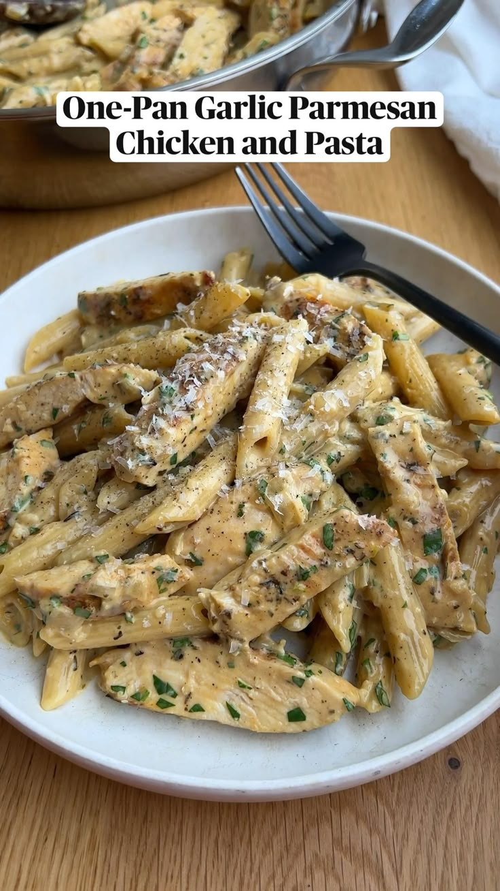

Good Food
Pasta recipes
let's find some super simple pasta recipes for your midweek meals and those times you need to use what you already have in your cupboard!
Garlic Parmesan Chicken and Pasta
This Garlic Parmesan Chicken and Pasta is an easy yet restaurant-worthy dinner. With an irresistibly rich and creamy sauce and tender chicken, this will quickly become your new favorite pasta dish. The best part…it's all made in one pan, in just about 30 minutes so you can enjoy it even on the weeknights when the comfort food craving hits.
Ingredients
- For the Chicken:
- 1 tbsp avocado oil or olive oil
- 1 lb boneless, skinless chicken breast
- 1 tbsp italian seasoning
- ½ tsp paprika
- salt & pepper to taste
- For the Pasta:
- 1 tbsp avocado oil or olive oil
- 1 tbsp unsalted butter
- ½ jumbo yellow onion diced (1 cup)
- 4-6 large cloves garlic minced
- 8 oz dry penne pasta
- 2 cups chicken broth
- 1 cup finely grated parmesan cheese
- ½ cup heavy cream
- 2 tbsp chopped parsley
Instructions
In a small bowl, mix together the italian seasoning, paprika, salt & pepper. Pat the chicken dry and then rub both sides with the seasoning mixture. 1 tbsp italian seasoning,½ tsp paprika,salt & pepper,1 lb boneless, skinless chicken breast
Heat the oil in a large skillet over medium-high heat. Add the chicken and cook for 5-7 minutes on each side until golden brown and cooked through. Remove the chicken from the skillet and set aside.
Reduce heat to medium-low and add more avocado oil and butter. Then, add onion and season it with salt. Cook, stirring occasionally, for about 3 minutes, or until beginning to get tender and translucent. Add garlic, stir, and cook for 1 minute longer. 1 tbsp avocado oil,1 tbsp unsalted butter,½ jumbo yellow onion,4-6 large cloves garlic
Deglaze the pan with chicken broth, scraping up all the browned bits stuck to the bottom. Allow the broth to come to a light boil. Then, add the dry pasta and stir to make sure that the pasta is submerged in the broth. 2 cups chicken broth,8 oz dry penne pasta Cover the pan and cook for 10 minutes or until the pasta is al-dente.
Turn off the heat and add in the parmesan, heavy cream and parsley. Stir until the parmesan is melted and the sauce is warm and thickened slightly. Taste and adjust salt and pepper as needed. 1 cup finely grated parmesan cheese,½ cup heavy cream,2 tbsp chopped parsley Slice the cooked chicken into strips and add it into the pan along with the pasta. Toss to combine. Then, serve & enjoy!